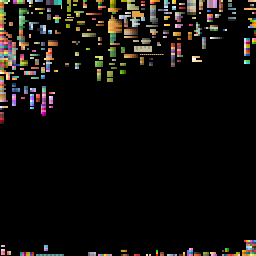

Toon Uber Shader
TAK’s Toon Shader was my first task when I entered Alike, and it came from a very specific problem: artistic control.
TAK was using an unmodified version of a shader they found in the Unity asset store before I arrived, and while it was easy to use to get a prototype going, it didn’t scale well with the environments and mechanics that were getting implemented.
Ultimately a new and bespoke version of the shader needed to be done, with added functionality and an updated Editor the artists could use to easily modify materials.
The Aesthetic

TAK’s style was based on the original 2014 anime of Go-Go Tamagotchi! It had a distinct cell-shaded look with visible rim-light/fresnel effects , an outline, and mainly plain color and gradients.
Most of the characters and environments had a very round and cute silhouette, so both static and animated objects needed to fit this design choice.
Because it was inspired in an anime, most of the characters’ facial expressions could be portrayed using a couple animation frames, so except for some specific characters, most of the facial animation would be done using sprites.
We wanted to use the 3D aspect to our advantage, so we also decided to add some other effects to the shader that suited the anime aesthetic well, as well as some changes in colouring, as it looked a bit dated in a videogame setting.
The Uber Shader’s Requirements
To achieve a look similar to the original Tamagotchi Anime, we defined a series of effects that would need to be implemented and blended together inside the shader:
Posterized (Toon) Lambert Shading
Very basic implementation of a lambert + smoothstep lighting model with color tinting and light offsetting.
Specular Reflections for Glossy Surfaces
Basic implementation of Specular Reflections with controls for smoothness, size and color.

Day Night Cycle Support
TAK moves in a realtime day/night cycle, and we needed a way to implement a way to reflect that inside the shader, in the form of a global variable that modified the ambient color of the entire scene.
Rim Light / Fresnel
To give a bit more depth to our characters in the scene, we added a Rim Light + Fresnel control that could transition between the two for different objects, as well as smoothness and color controls.
Outline
To separate objects from each other and the background with such plain shading, a hull outline with variable thickness and color blending modes was implemented.
To minimize batches, and to avoid overdraw, the outline was implemented as a separate pass present in all variants of the main shader, and used to draw every object with said pass in a pass after the first mesh drawing pass was finished.
This ensured all objects using the outline shader got called into the same batch, and the main drawing pass had a better chance at being batched correctly.
Most of these features needed to be able to be switched on/off depending on the material, so the Shader and the Editor needed to support that.
The Architecture
Since most of the features of the shader would need to be implemented in other shaders or shadergraphs, an effort was made to atomize the structure of the shader such that every feature could be called from a single function externally.
Inside the main shader, features would be implemented by importing each needed include file:
#include "Toon/Dither.hlsl"
#include "Toon/RimLight.hlsl"
#include "Toon/ToonRamp.hlsl"
#include "Toon/Specular.hlsl"
#include "Toon/DirectionalLight.hlsl"
#include "Toon/Shadows.hlsl"
#include "Packages/com.unity.render-pipelines.universal/ShaderLibrary/Lighting.hlsl"Then, each feature could be called from a shadergraph-compatible function, just like this:
CalculateDirectionalLightAndShadowCoord_half(data.vertexWS, lightDirection, lightColor, light);
CalculateToonRamp_half(normal, lightDirection, _ShadowEdgeSize, _ColorDim, 1 - _SelfShadingSize, toonMask);
CalculateRimLight_half(data.vertexWS, normal, lightDirection, rimLight);
CalculateShadows_half(light, normal, shadowMask, decalShadowAlpha, shadow);
CalculateSpecular_half(data.vertexWS, lightDirection, normal, color, specularColor);The Limitations
Because the game was primarily developed for Apple devices (including really old iPhones and AppleTVs), we had very strict limitations in terms of memory and triangle drawing, so there were some compromises and optimizations that had to be in mind while developing the shader:
Limited Texture Use
For most meshes in the game, the shading was done using a unique 256x256 texture that had groups of pixels in different islands, the UVs of which were then collapsed into the color or gradient the artist wanted to use.
This severely helped in terms of memory use, since we didn’t need to have one texture per material/model, and a lot more resources could be allocated into drawing triangles and having bigger and more dyamic environments.
{kind=link}

Hull Outline
I experimented with different outlining methods to achieve a cartoony look, however Hull Outlines were unequivocally the most performant and versatile.
Most Outlining effects use the DepthNormals Texture or some other prepass technique to draw outlines in a post processing shader. This was not viable in our case as drawing all objects in different passes tanked fps in very low end devices, like most AppleTVs or iPhone SEs

Hull Outlines also have the benefit of having per-object data about the outline being drawn, which meant we could sample the object’s texture and UVs and have the outline be tinted similarly to the nearest vertex.
Dithered Transparency
When Mametchi was behind an object, we needed there to be a way in which the player could still see themselves even if there was an object occluding their view. After some experimentation, we decided it was best to make the occluder a bit transparent
However, traditional transparency also proved to be an issue in several devices and future platforms we wanted to release the game in, so a solution we found was to use dithered transparency, which gave the illusion of an object being semi-transparent while the shader remained entirely opaque

This also went on to become a great stylistic tool for artists in some areas of the game, since the dithered look was a lot more interesting and fit the cartoony style of the game a lot more than plain transparency.